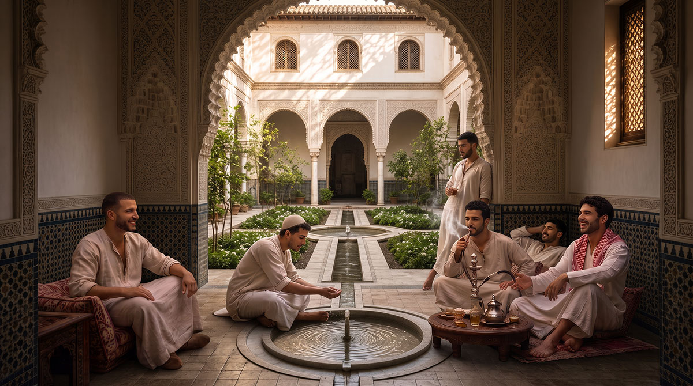
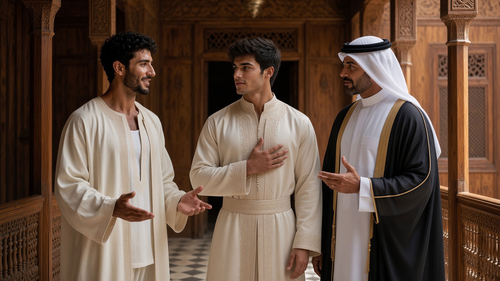
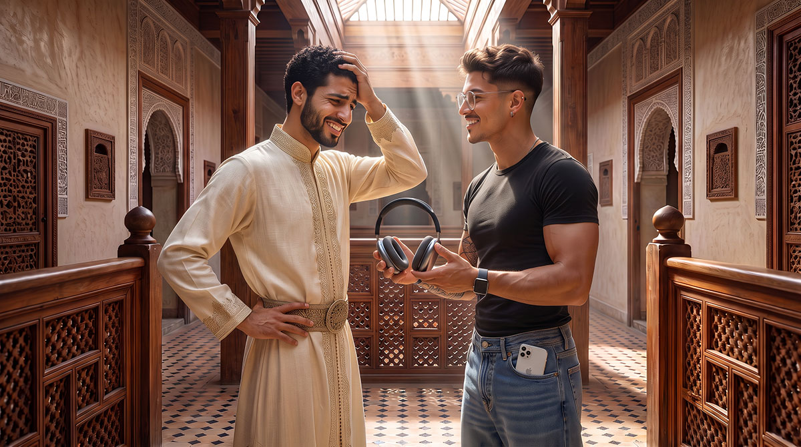

La résidence
On ne vient pas à Dar al-Hiraf pour un cours. On y vit.

LA CONDITION DE LA FORMATION
Vivre, pas seulement apprendre
La résidence est la condition de la formation. Le métier, la prière, le corps, la table et la conversation du soir forment un seul rythme, tenu ensemble jour après jour.
L'homme qui en sort doit être capable de tenir seul — un métier, une maison, une parole.
Âge et engagement
La formation longue est réservée aux majeurs (18+). Les stages, ci-dessous, existent comme porte d'entrée sous conditions.
La priorité reste la continuité des métiers et la formation d'hommes capables de tenir.
PORTE D'ENTRÉE
Les stages de formation

Quelques jours aux côtés d'un maître, un seul métier, le rythme de la maison — sans s'engager dans la résidence longue.
Ce n'est pas une initiation touristique : c'est une porte d'entrée réelle, pour éprouver si ce chemin mérite d'être poursuivi.
إِنَّمَا الْأَعْمَالُ بِالنِّيَّاتِ
« Les actes ne valent que par les intentions. »
Hadith — Sahih al-Bukhari
La sélection porte sur la disposition, non sur un niveau technique préalable.
Les métiers ouverts au stage
Un seul métier, choisi à l'avance. Détail dans Les métiers de la main et Musique & chant.
MÉTIERS DE LA MAIN
- Calligraphie
- Zellige
- Plâtre & mocárabe
- Tissage & brocart
- Bois & intaille
- Fer forgé
- Maroquinerie
- Poterie
- Parfums & essences
CORPS, VERBE ET SON
- Musara
- Tir à l'arc — Rimaya
- Équitation
- Sayf wa-l-turs
- Javanmardi — zurkhane
- Tahtib
- Malhun
- Gnawa

DRESS CODE
Le vêtement, pendant le séjour
Le vêtement traditionnel est la règle — repas, prière, ateliers. Ce n'est pas un déguisement : c'est apprendre le geste et la mesure par le corps.
Pourquoi le vêtement traditionnel →Durée
Quelques semaines. Assez pour toucher le métier et le rythme.
Cadre
Encadrement dédié, sans entrer dans le cercle de la résidence.
Âge des stagiaires
Le stage reste ouvert à des candidats plus jeunes que l'âge de la résidence longue — une première rencontre avec le métier, avant l'âge de l'engagement. Ces stagiaires plus jeunes sont logés dans un espace dédié, annexe à la foresterie et distinct de la résidence des majeurs, sous la responsabilité constante d'un encadrant dédié.
Les stages sont ouverts sous conditions. Pour toute demande, précisez le métier envisagé et l'âge du candidat.
CE QUI TIENT LA MAISON
Le règlement
Chaque résident reçoit, à son admission, le règlement de vie communautaire — rythme, respect mutuel, tutorat, tenue, appareils, sorties. Il le signe avant de s'installer.
Document d'usage interne, remis à l'admission. Aperçu ici ; le texte complet est communiqué à tout candidat sérieux qui en fait la demande.
Nous écrire pour en savoir plus →